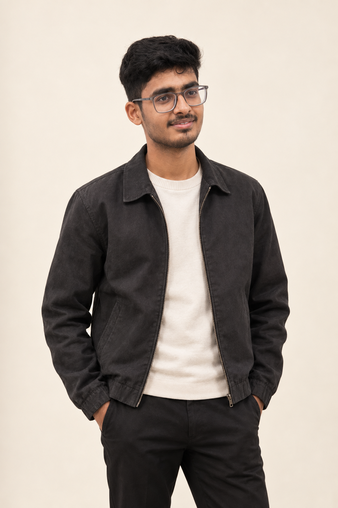
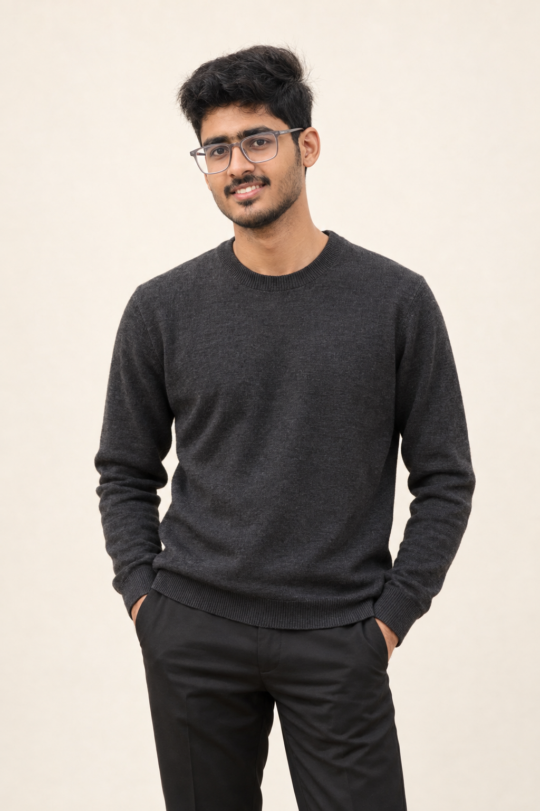
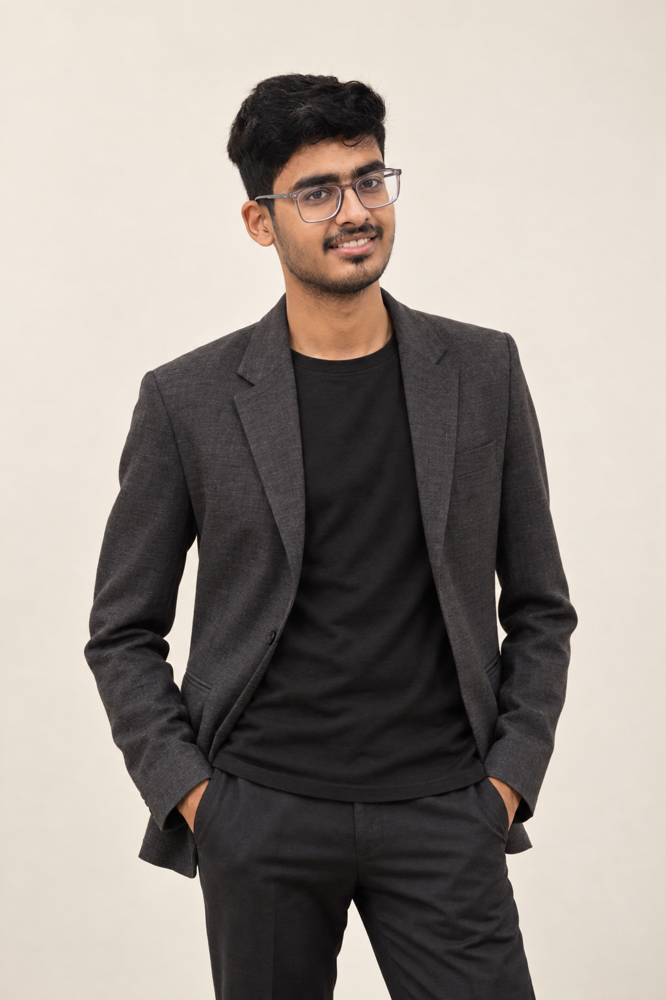
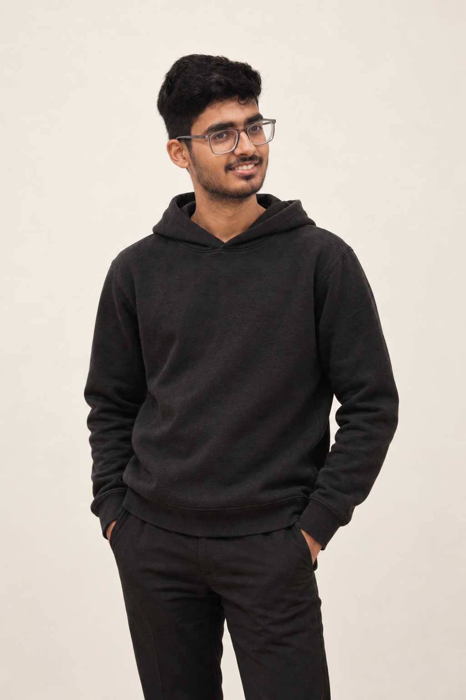

My pick for the cream, black, and red hero is the charcoal jacket. The ivory neckline frames the face, and the jacket gives a clear silhouette. Open any portrait for the full-resolution file.

Relaxed, polished, and a strong match for the editorial hero.

Simple, approachable, and visually quiet.

A more polished founder portrait.

A casual option with a simpler neckline.